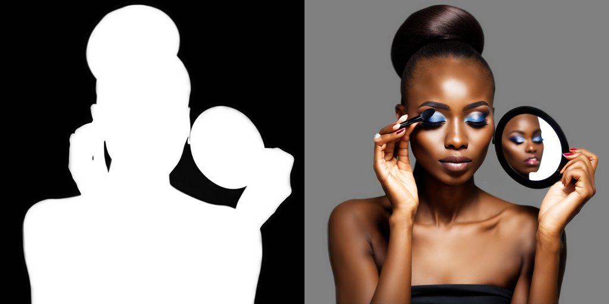
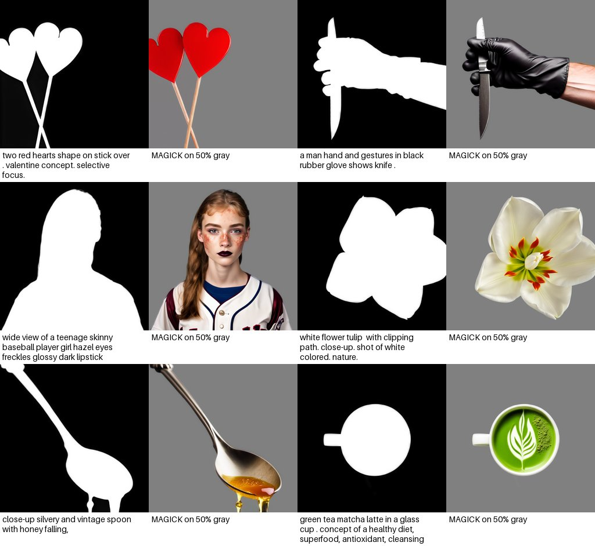

Everything after this entry trains on MAGICK, the dataset of generated RGBA images with short captions. Step 0 turns its 191 GB of PNGs into one table that the trainers read: for each image, the matte, the object on 50% gray, and both encoded into the latent space of the SANA VAE. We ran this as a BlueJay pipeline on the 8-GPU node.
One BlueJay table (magick_samples) has one row per image. Four processors fill it in order; each one claims rows that the stage before it finished, so the stages ran at the same time.
| Processor | What it does | Adds to the row |
|---|---|---|
import_index | Reads MAGICK's magick_index.tsv, drops the duplicate page_ids, assigns the train / eval split. | page_id, caption (the subject column), split, nsfw flag, sim_score |
download_image | Downloads each PNG from Hugging Face. | rgba (the 1024×1024 PNG) |
split_alpha | Splits RGBA into the matte and the gray composite; measures the matte. | alpha, rgb_on_gray, alpha coverage, soft-edge fraction, green spill |
encode_latents | Encodes matte and gray composite with the DC-AE; decodes once to measure the round-trip error. | latent_alpha_1024, latent_rgb_1024 (32×32×32 each), vae_psnr_1024 |
Latents are stored unscaled; trainers multiply by the VAE scaling factor 0.41407. On one A100 (bf16, batch 8) the DC-AE encodes about 13 images/s and decodes about 9 images/s, so encoding all 141k images is a job for all 8 GPUs.
| Quantity | Value |
|---|---|
| Index rows / unique images | 148,193 / 140,955 |
| Downloaded / with an alpha channel / encoded | 140,941 / 140,938 / 140,938 |
| Split: train / eval | 140,926 / 29 |
| Flagged NSFW (kept in the table, excluded from training) | 2,847 |
| Used for adapter training (train, not NSFW, latents present) | 138,063 |
| Object coverage: mean alpha | 0.355 (median 0.360) |
| Pixels with partial alpha, 0 < alpha < 1 | mean 12.8% of the image (median 11.3%) |
| Green spill on the object (chroma-key residue) | mean 0.009, median about 0; worst image 0.93 |
| VAE round-trip PSNR, gray composite | mean 35.5 dB, median 35.3 dB, 5th percentile 28.2 dB, worst 16.7 dB |
Counts are read from the table data/lance/magick_samples.lance at the time of writing. Alpha, spill and PSNR are means over the 140,938 encoded images. Green spill is the mean of max(0, g − max(r, b)) over pixels with alpha above 0.5.
sim_score (mean 0.991); all non-NSFW images are used.
Our first download used 32 loops × 16 threads. Hugging Face allows a fixed window of 5,000 requests per 300 s per token (ratelimit-policy header), and answers 429 with a retry-after value beyond it. The burst got 429s, and 680 images ran out of their 8 retries. The fix was to wait the retry-after time (plus jitter) and give up only after an hour, with 8 loops. The sustained cap is 5,000 / 300 s = 16.7 images/s, so 140,955 images need at least 2.3 hours. More loops cannot go faster.
An image is an eval image when sha256(page_id), read as an integer, mod 4000 is 0. This selects 29 of the 140,955 images, none NSFW; the rule is the same one the table's split column uses, so nothing in the eval set was ever a training row. For each we keep the matte, the gray composite and the caption. Every later step uses the same 29 images and the same fixed noise (seed 20261117), so models compare image by image. Six of them:

The captions are dated and sometimes broken, such as "stone black and" and "red apple on a solid". We did not clean them.
data/project.dtab.data/project.dtab, data/processors/.